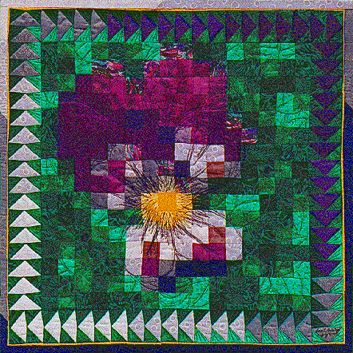

Violet MosaicViolet Mosaic
Violet MosaicViolet Mosaic
| #P103..........$7.95 24" X 24"" When I was a child, growing up in Annapolis, MD, my brothers and I each got a chance to stay at my Grandparents' for a week each summer without the other siblings. Being the only girl, I looked forward to this time without brothers. One of the things my Grandparents let me do was go out in the garden and pick flowers. Then I got to pick which vase they would be placed in. My favorites were the miniature vases. Of course, violets were the perfect flowers for miniature vases. To this day, every time I see a violet, I am reminded of those blissful summer days spent at my Grandparents' house. A Flying Goose border surrounds this delightful, easy to piece violet wall quilt. |
 Copyright 1994, Jane L. Kakaley |